HuggingGPT: Solving AI Tasks with ChatGPT and its Friends in Hugging Face
HuggingGPT：用 ChatGPT 与它在 Hugging Face 的'朋友们'协作解决 AI 任务
简介
论文要解决的问题是：LLM 局限于文本输入输出、难以处理视觉/语音等模态，复杂任务需要多模型调度协作，且 LLM 弱于微调过的专家模型。方法上提出 HuggingGPT，以 LLM（如 ChatGPT）为控制器、以语言为通用接口连接 Hugging Face 社区的专家模型，工作流分四阶段：任务规划（规格化指令+示例解析，输出含 task/id/dep/args 的 JSON 任务列表）、模型选择（把任务-模型匹配建模为 in-context 单选题，按任务类型过滤并按下载量取 topK 以节省 token）、任务执行（用 <resource>-task_id 占位符处理资源依赖，无依赖任务并行执行，本地+云混合端点）、响应生成（整合结构化推理结果）。关键结论：GPT-3.5 的规划能力全面优于 Alpaca-7b/Vicuna-7b，增加示例多样性可适度提升规划效果、示例数超过 4 后收益有限；即便 GPT-4 与人工标注相比仍有明显差距，且系统存在效率、token 长度与输出不稳定等局限。对团队而言，它是 Agent harness 设计、提示模板组织与规划能力评测方法的经典参考。
问题
当前 LLM 受限于文本输入输出形式，缺乏处理视觉、语音等复杂信息的能力；真实场景的复杂任务通常由多个子任务组成，需要多模型的调度与协作；且 LLM 在零样本/少样本设定下仍弱于微调的专家模型。核心问题是：如何选择合适的中间件桥接 LLM 与大量现有 AI 模型，让 LLM 作为控制器自主规划、调度并协作这些模型来完成复杂 AI 任务。
方法
提出 'Language as a generic interface' 理念：把专家模型的功能描述以语言形式纳入 prompt，让 LLM 充当大脑进行规划、调度与合作。系统为四阶段流水线：1) 任务规划：用规格化指令（JSON 模板，含 task/id/dep/args 四个槽位）+ demonstration-based parsing 将用户请求解析为结构化任务列表并确定依赖与执行顺序，多轮对话时将 chat logs 注入 prompt；2) 模型选择：将任务-模型分配建模为 in-context 单选题，因上下文长度限制先按任务类型过滤、再按 Hugging Face 下载量排序取 topK 候选；3) 任务执行：用 <resource>-task_id 占位符动态替换前置任务产出以处理资源依赖，无依赖任务并行执行，并采用本地+云混合推理端点保证速度与稳定性；4) 响应生成：将规划任务、所选模型与结构化推理结果整合为面向用户的摘要。实验中设置 temperature=0 并用 logit_bias 约束 JSON 输出格式。
关键结果
构建 3,497 条用户请求的规划评测集（GPT-4 伪标注：单任务 1,450、序列任务 1,917、图任务 130），另建 46 例人工标注高质量子集（24 个序列任务 + 22 个图任务）
在三类规划评测中，GPT-3.5 全面优于开源 LLM Alpaca-7b 与 Vicuna-7b，在序列与图等复杂任务上优势明显；GPT-4 最强但与人工标注相比仍有 substantial gap
人工评测（3 位专家、130 条多样化请求，指标为 passing rate/rationality/success rate）显示 GPT-3.5 在任务规划、模型选择到响应生成各阶段均大幅超过 Alpaca-13b 与 Vicuna-13b
消融实验：增加示例的多样性可适度提升规划性能；增加示例数量有轻微提升，但超过 4 个示例后改进有限
系统已支持 24 种 AI 任务，覆盖语言、视觉、语音等模态
创新点
区别于统一多模态模型（Flamingo、BLIP-2、Kosmos-1）、在文本序列中嵌入 API 标签的 Toolformer、融合视觉基础模型的 Visual ChatGPT、以及用 Python 代码解析视觉查询的 Visual Programming/ViperGPT，HuggingGPT 用 LLM 作控制器、以模型描述为语言接口把用户请求路由给专家模型，只需提供模型描述即可持续接入新模型而无需改动结构或提示设置；与 AutoGPT/AgentGPT/BabyAGI 的逐步迭代式规划不同，HuggingGPT 采用全局规划策略一次查询生成完整任务队列，并系统化给出四阶段流水线。
团队参考意义
相关度级别：high
命中能力域：3.3 Agent 架构与工具使用 | 3.2 提示工程 | 3.5 评测与可靠使用 | 3.4 多智能体协作 | 3.1 上下文工程与记忆
理由：直接命中 3.3：论文是 'LLM 作控制器 + 外部模型/工具调用 + 任务规划' 的 Agent harness 代表作，其四阶段 loop、资源依赖处理与混合端点部署都是单 Agent 执行可靠性的核心设计。同时强命中 3.2（规格化指令 + demonstration-based parsing 的提示模板设计、in-context task-model assignment、示例数量/多样性消融）；命中 3.5（构建规划评测集、GPT-4 as judge、passing rate/rationality/success rate 人工评测指标，并明确讨论效率、token 长度与不稳定性等可靠性问题）；次要命中 3.4（对多个专家模型做任务分解、分工与编排）与 3.1（因上下文长度限制做模型过滤 + topK 裁剪以管理 prompt token，多轮对话注入 chat logs）。
建议动作：深入精读并做内部分享
中文全文
arXiv:2303.17580v4 [cs.CL] 2023年12月3日
HuggingGPT: Solving AI Tasks with ChatGPT and its Friends in Hugging Face
Yongliang Shen 1 , 2 , ∗ , Kaitao Song 2 , ∗ , † , Xu Tan 2 , Dongsheng Li 2 , Weiming Lu 1 , † , Yueting Zhuang 1 , †
浙江大学 1 ，微软亚洲研究院 2
{syl, luwm, yzhuang}@zju.edu.cn ， {kaitaosong, xuta, dongsli}@microsoft.com
Abstract
解决跨不同领域和模态的复杂 AI 任务是迈向通用人工智能的关键一步。尽管目前已有大量可用于不同领域和模态的 AI 模型，但它们无法自主地处理复杂的 AI 任务。鉴于大语言模型（Large Language Models, LLMs）在语言理解、生成、交互和推理方面展现出卓越的能力，我们主张 LLMs 可以充当控制器，管理现有的 AI 模型来解决复杂的 AI 任务，并以语言作为通用接口来赋能这一过程。基于这一理念，我们提出了 HuggingGPT，这是一个由 LLM 驱动的 Agent，它利用 LLMs（例如 ChatGPT）连接机器学习社区（例如 Hugging Face）中的各种 AI 模型来解决 AI 任务。具体而言，在接收到用户请求时，我们使用 ChatGPT 进行任务规划，根据 Hugging Face 上可用的功能描述选择模型，使用选定的 AI 模型执行每个子任务，并根据执行结果总结响应。通过利用 ChatGPT 强大的语言能力和 Hugging Face 中丰富的 AI 模型，HuggingGPT 能够应对跨越不同模态和领域的各种复杂 AI 任务，并在语言、视觉、语音以及其他具有挑战性的任务中取得了令人瞩目的成果，这为实现通用人工智能开辟了一条新的道路。
1 Introduction
以 ChatGPT 为代表的大语言模型（LLM）[1, 2, 3, 4, 5, 6] 因在各类自然语言处理（NLP）任务上的卓越表现，受到了学术界和工业界的广泛关注。基于对海量文本语料的大规模预训练以及基于人类反馈的强化学习 [2]，LLM 在语言理解、生成和推理方面展现出卓越的能力。LLM 的强大能力也催生了许多新兴研究课题（例如上下文学习（in-context learning）[1, 7, 8]、指令学习 [9, 10, 11, 12, 13, 14] 以及思维链（CoT）提示 [15, 16, 17, 18]），以进一步挖掘 LLM 的巨大潜力，并为我们推进通用人工智能带来了无限可能。
尽管取得了这些巨大的成功，当前的 LLM 技术仍不完善，在构建先进 AI 系统的道路上面临着一些紧迫的挑战。我们从以下几个方面进行讨论：1）受限于文本生成的输入输出形式，当前的 LLM 缺乏处理视觉和语音等复杂信息的能力，尽管它们在 NLP
* 前两位作者贡献相同。本工作是第一作者在微软亚洲研究院实习期间完成的。
† 通讯作者。
第 37 届神经信息处理系统大会（NeurIPS 2023）。
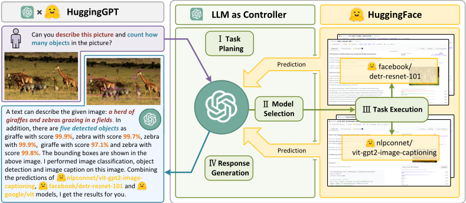
任务中取得了显著成就；2）在现实场景中，一些复杂任务通常由多个子任务组成，因此需要多个模型的调度与协作，这也超出了语言模型的能力范围；3）对于一些具有挑战性的任务，LLM 在零样本或少样本设置下展现出出色的结果，但仍弱于某些专家（例如微调模型）。如何解决这些问题，可能是 LLM 迈向通用人工智能的关键一步。
在本文中，我们指出，为了处理复杂的 AI 任务，大语言模型（LLM）应当能够与外部模型协同，以借助它们的能力。因此，关键问题在于如何选择合适的中间件来连接 LLM 与 AI 模型。为解决这一问题，我们注意到，每个 AI 模型都可以通过总结其功能，以语言的形式加以描述。因此，我们提出一个概念："语言作为 LLM 与 AI 模型协作的通用接口"。换言之，通过将这些模型描述纳入提示中，LLM 可以被视为管理 AI 模型的大脑，负责规划、调度与协作等。这样一来，该策略使 LLM 能够调用外部模型来解决 AI 任务。然而，当涉及将多个 AI 模型集成到 LLM 中时，另一个挑战随之而来：解决大量 AI 任务需要收集大量高质量的模型描述，而这又需要繁重的提示工程。恰巧，我们注意到一些公开的机器学习（ML）社区通常会提供种类繁多的可用模型，并配有定义清晰的模型描述，用于解决语言、视觉和语音等特定 AI 任务。这些观察给我们带来了启发：我们能否通过基于语言的接口，将 LLM（如 ChatGPT）与公开的 ML 社区（如 GitHub、Hugging Face 1 等）连接起来，以解决复杂的 AI 任务？
在本文中，我们提出一个由 LLM 驱动的智能体（agent）——HuggingGPT，用于自主处理各种复杂的 AI 任务。它将 LLM（即 ChatGPT）与 ML 社区（即 Hugging Face）连接起来，并能够处理来自不同模态的输入。更具体地说，LLM 充当大脑的角色：一方面，它根据用户请求对任务进行分解；另一方面，它根据模型描述为任务分配合适的模型。通过在规划好的任务中执行模型并整合结果，HuggingGPT 能够自主地完成复杂的用户请求。HuggingGPT 的整个过程如图 1 所示，可分为四个阶段：
1 https://huggingface.co/models
![Figure 2: Overview of HuggingGPT. With an LLM (e.g., ChatGPT) as the core controller and the expert models as the executors, the workflow of HuggingGPT consists of four stages: 1) Task planning : LLM parses the user request into a task list and determines the execution order and resource dependencies among tasks; 2) Model selection : LLM assigns appropriate models to tasks based on the description of expert models on Hugging Face; 3) Task execution : Expert models on hybrid endpoints execute the assigned tasks; 4) Response generation : LLM integrates the inference results of experts and generates a summary of workflow logs to respond to the user.](assets/a215/figures/fig_2.png)
得益于这样的设计，HuggingGPT 能够根据用户请求自动生成计划并使用外部模型，从而使其能够整合多模态感知能力，应对各种复杂的 AI 任务。更值得注意的是，这一流程使 HuggingGPT 能够持续吸收来自特定任务专家模型的能力，促进 AI 能力的增长与可扩展性。
总体而言，我们的贡献可以总结如下：
2 Related Works
近年来，大语言模型（LLMs）[1, 2, 3, 4, 5, 19, 6] 的出现彻底变革了自然语言处理（NLP）领域，其代表包括 GPT-3 [1]、GPT-4 [20]、PaLM [3] 和 LLaMa [6] 等模型。凭借海量语料库和高强度的训练计算，LLMs 在零样本（zero-shot）和少样本（few-shot）任务中，以及数学问题和常识推理等更复杂的任务中，展现出了令人瞩目的能力。为了将大语言模型（LLMs）的应用范围扩展到文本生成之外，当前的研究可以分为两个分支：1）一些工作设计了统一的多模态语言模型来解决各种 AI 任务 [21, 22, 23]。例如，Flamingo [21] 将冻结的预训练视觉模型与语言模型相结合，用于感知与推理；BLIP-2 [22] 利用 Q-former 来协调语言与视觉语义；Kosmos-1 [23] 则将视觉输入融入文本序列，以融合语言与视觉输入。2）最近，一些研究者开始探索在 LLMs 中集成工具或模型的使用 [24, 25, 26, 27, 28]。Toolformer [24] 是一项开创性工作，它在文本序列中引入外部 API 标签，从而增强了 LLMs 访问外部工具的能力。随后，大量工作将 LLMs 扩展到涵盖视觉模态。Visual ChatGPT [26] 将 BLIP [29] 和 ControlNet [30] 等视觉基础模型与 LLMs 相融合。Visual Programming [31] 和 ViperGPT [25] 通过使用编程语言将 LLMs 应用于视觉对象，将视觉查询解析为以 Python 代码表示的可解释步骤。关于相关工作的更多讨论见附录 B。
与这些方法不同，HuggingGPT 在以下几个方面朝着更通用的 AI 能力迈进：1）HuggingGPT 使用 LLM 作为控制器，将用户请求路由到专家模型，从而有效地将 LLM 的语言理解能力与其他专家模型的专业能力相结合；2）HuggingGPT 的机制使其能够通过 LLM 组织模型间的协作，从而处理任何模态或任何领域的任务。得益于 HuggingGPT 中任务规划的设计，我们的系统能够自动且高效地生成任务流程，并解决更复杂的问题；3）HuggingGPT 提供了一种更灵活的模型选择方法，基于模型描述来分配和编排任务。只需提供模型描述，HuggingGPT 就能够持续、便捷地集成来自 AI 社区的各种专家模型，而无需更改任何结构或提示（prompt）设置。这种开放且持续的方式使我们向实现通用人工智能又迈进了一步。
3 HuggingGPT
HuggingGPT 是一个用于解决 AI 任务的协作系统，由一个大语言模型（LLM）和来自机器学习（ML）社区的众多专家模型组成。其工作流程包括四个阶段：任务规划、模型选择、任务执行和响应生成，如图 2 所示。给定一个用户请求，采用 LLM 作为控制器的 HuggingGPT 将自动部署整个工作流程，从而协调并执行专家模型以达成目标。表 1 展示了我们 HuggingGPT 中详细的提示（prompt）设计。在接下来的小节中，我们将介绍每个阶段的设计。
3.1 Task Planning
通常，在现实场景中，用户请求往往包含一些复杂的意图，因此需要编排多个子任务才能实现目标。为此，我们将任务规划
表 1：HuggingGPT 中提示设计的细节。在提示中，我们设置了一些可注入的槽位（slot），例如 {{ Demonstrations }} 和 {{ Candidate Models }}。这些槽位在送入 LLM 之前会被统一替换为相应的文本。
| Prompt.#1 Task Planning Stage - The AI assistant performs task parsing on user input, generating a list of tasks with the following format: [{ "task" : task, "id" , task_id, "dep" : dependency_task_ids, "args" : { "text" : text, "image" : URL, "audio" : URL, "video" : URL}}]. The "dep" field denotes the id of the previous task which generates a new resource upon which the current task relies. The tag " <resource>-task_id " represents the generated text, image, audio, or video from the dependency task with the corresponding task_id. The task must be selected from the following options: {{ Available Task List }}. Please note that there exists a logical connections and order between the tasks. In case the user input cannot be parsed, an empty JSON response should be provided. Here are several cases for your reference: {{ Demonstrations }}. To assist with task planning, the chat history is available as {{ Chat Logs }}, where you can trace the user-mentioned resources and incorporate them into the task planning stage..Demonstrations.Task Planning Can you tell me how many objects in e1.jpg? | Prompt.#1 Task Planning Stage - The AI assistant performs task parsing on user input, generating a list of tasks with the following format: [{ "task" : task, "id" , task_id, "dep" : dependency_task_ids, "args" : { "text" : text, "image" : URL, "audio" : URL, "video" : URL}}]. The "dep" field denotes the id of the previous task which generates a new resource upon which the current task relies. The tag " <resource>-task_id " represents the generated text, image, audio, or video from the dependency task with the corresponding task_id. The task must be selected from the following options: {{ Available Task List }}. Please note that there exists a logical connections and order between the tasks. In case the user input cannot be parsed, an empty JSON response should be provided. Here are several cases for your reference: {{ Demonstrations }}. To assist with task planning, the chat history is available as {{ Chat Logs }}, where you can trace the user-mentioned resources and incorporate them into the task planning stage..Demonstrations.[{ "task" : "object-detection", "id" : 0, "dep" : [-1], "args" : { "im age" : "e1.jpg" }}] |
|---|---|
| In e2.jpg, what's the animal and what's it doing? | [{ "task" : "image-to-text", "id" : 0, "dep" :[-1], "args" : { "im age" : "e2.jpg" }}, { "task" :"image-cls", "id" : 1, "dep" : [-1], "args" : { "image" : "e2.jpg" }}, { "task" :"object-detection", "id" : 2, "dep" : [-1], "args" : { "image" : "e2.jpg" }}, { "task" : "vi- sual-quesrion-answering", "id" : 3, "dep" :[-1], "args" : { "text" : "what's the animal doing?", "image" : "e2.jpg" }}] |
| First generate a HED image of e3.jpg, then based on the HED image and a text 'a girl reading a book', create a new image as a response. | [{ "task" : "pose-detection", "id" : 0, "dep" : [-1], "args" : { "im age" : "e3.jpg" }}, { "task" : "pose-text-to-image", "id" : 1, "dep" : [0], "args" : { "text" : "a girl reading a book", "image" : "<re- source>-0" }}] |
| Prompt | Prompt |
| #2 Model Selection Stage - Given the user request and the call command, the AI assistant helps the user to select a suitable model from a list of models to process the user request. The AI assistant merely outputs the model id of the most appropriate model. The output must be in a strict JSON format: { "id" : "id", "reason" : "your detail reason for the choice"}. We have a list of models for you to choose from {{ Candidate Models }}. Please select one model from the list. | #2 Model Selection Stage - Given the user request and the call command, the AI assistant helps the user to select a suitable model from a list of models to process the user request. The AI assistant merely outputs the model id of the most appropriate model. The output must be in a strict JSON format: { "id" : "id", "reason" : "your detail reason for the choice"}. We have a list of models for you to choose from {{ Candidate Models }}. Please select one model from the list. |
| Candidate Models | Candidate Models |
| "metadata": meta-info #1, "description": description of model #1} "metadata": meta-info #2, "description": description of model #2} · · · · · · meta-info # K , "description": description of model # K } | "metadata": meta-info #1, "description": description of model #1} "metadata": meta-info #2, "description": description of model #2} · · · · · · meta-info # K , "description": description of model # K } |
| Prompt | Prompt |
| #4 Response Generation Stage - With the input and the inference results, the AI assistant needs to describe the process and results. The previous stages can be formed as - User Input: {{ User Input }}, Task Planning: {{ Tasks }}, Model Selection: {{ Model Assignment }}, Task Execution: {{ Predictions }}. You must first answer the user's request in a straightforward manner. Then describe the task process and show your analysis and model inference results to the user in the first person. If inference results contain a file path, must tell the user the complete file path. If there is nothing in | #4 Response Generation Stage - With the input and the inference results, the AI assistant needs to describe the process and results. The previous stages can be formed as - User Input: {{ User Input }}, Task Planning: {{ Tasks }}, Model Selection: {{ Model Assignment }}, Task Execution: {{ Predictions }}. You must first answer the user's request in a straightforward manner. Then describe the task process and show your analysis and model inference results to the user in the first person. If inference results contain a file path, must tell the user the complete file path. If there is nothing in |
| {"model_id": model id # K , "metadata": | {"model_id": model id # K , "metadata": |
| the | the |
| Response | |
| results, | |
| please tell me you can't make it. | |
| Generation | |
| {"model_id": model id #1, {"model_id": model id #2, · · · |
| Prompt.#1 Task Planning Stage - The AI assistant performs task parsing on user input, generating a list of tasks with the following format: [{ "task" : task, "id" , task_id, "dep" : dependency_task_ids, "args" : { "text" : text, "image" : URL, "audio" : URL, "video" : URL}}]. The "dep" field denotes the id of the previous task which generates a new resource upon which the current task relies. The tag " <resource>-task_id " represents the generated text, image, audio, or video from the dependency task with the corresponding task_id. The task must be selected from the following options: {{ Available Task List }}. Please note that there exists a logical connections and order between the tasks. In case the user input cannot be parsed, an empty JSON response should be provided. Here are several cases for your reference: {{ Demonstrations }}. To assist with task planning, the chat history is available as {{ Chat Logs }}, where you can trace the user-mentioned resources and incorporate them into the task planning stage..Demonstrations.Task Planning Can you tell me how many objects in e1.jpg? | Prompt.#1 Task Planning Stage - The AI assistant performs task parsing on user input, generating a list of tasks with the following format: [{ "task" : task, "id" , task_id, "dep" : dependency_task_ids, "args" : { "text" : text, "image" : URL, "audio" : URL, "video" : URL}}]. The "dep" field denotes the id of the previous task which generates a new resource upon which the current task relies. The tag " <resource>-task_id " represents the generated text, image, audio, or video from the dependency task with the corresponding task_id. The task must be selected from the following options: {{ Available Task List }}. Please note that there exists a logical connections and order between the tasks. In case the user input cannot be parsed, an empty JSON response should be provided. Here are several cases for your reference: {{ Demonstrations }}. To assist with task planning, the chat history is available as {{ Chat Logs }}, where you can trace the user-mentioned resources and incorporate them into the task planning stage..Demonstrations.[{ "task" : "object-detection", "id" : 0, "dep" : [-1], "args" : { "im age" : "e1.jpg" }}] |
作为 HuggingGPT 的第一阶段，其目标是利用 LLM 分析用户请求，然后将其分解为一组结构化任务。此外，我们要求 LLM 为这些分解后的任务确定依赖关系和执行顺序，以建立它们之间的联系。为了增强 LLM 中任务规划的效果，HuggingGPT 采用了一种提示设计，该设计由基于规范的指令（specification-based instruction）和基于示例的解析（demonstration-based parsing）组成。我们将在以下段落中介绍这些细节。
基于规范的指令 为了更好地表示用户请求所期望的任务并在后续阶段中使用它们，我们期望 LLM 遵循特定的规范（例如 JSON 格式）来解析任务。因此，我们为任务设计了一个标准化模板，并指示 LLM 通过槽位填充（slot filling）来进行任务解析。如表 1 所示，任务解析模板包含四个槽位（"task"、"id"、"dep" 和 "args"），分别表示任务名称、唯一标识符、依赖关系和参数。每个槽位的更多细节可在模板描述中找到（见附录 A.1.1）。通过遵循这些任务规范，HuggingGPT 能够自动利用 LLM 分析用户请求并相应地解析任务。
基于示例的解析 为了更好地理解任务规划的意图和准则，HuggingGPT 在提示中融入了多个示例。每个示例由一个用户请求及其对应的输出组成，该输出表示解析后任务的预期序列。通过融入任务间的依赖关系，这些示例帮助 HuggingGPT 理解任务之间的逻辑联系，从而便于准确确定执行顺序并识别资源依赖。我们示例的详细内容见表 1。
此外，为了支持更复杂的场景（例如多轮对话），我们通过附加以下指令将聊天记录纳入提示中：“为了辅助任务规划，聊天历史以 {{ Chat Logs }} 的形式提供，你可以在其中追踪用户提到的资源，并将其纳入任务规划。”这里，{{ Chat Logs }} 表示之前的聊天记录。这一设计使 HuggingGPT 能够在多轮对话中更好地管理上下文并响应用户请求。
3.2 Model Selection
在完成任务规划之后，HuggingGPT 随即进入任务与模型匹配的阶段，即为解析出的任务列表中的每个任务选择最合适的模型。为此，我们使用模型描述作为连接各个模型的语言接口。更具体地，我们首先从机器学习（ML）社区（例如 Hugging Face）收集专家模型的描述，然后采用动态的上下文内任务-模型分配机制来为任务选择模型。这一策略支持增量式的模型接入（只需提供专家模型的描述），并且能够更开放、更灵活地使用 ML 社区。更多细节将在下一段中介绍。
上下文内任务-模型分配（In-context Task-model Assignment） 我们将任务-模型分配表述为一个单选问题，其中可用的模型作为选项呈现在给定的上下文中。通常情况下，基于提示中提供的用户指令和任务信息，HuggingGPT 能够为每个解析出的任务选择最合适的模型。然而，由于最大上下文长度的限制，将所有相关模型的信息都纳入一个提示中并不可行。为了缓解这一问题，我们首先根据任务类型对模型进行过滤，以选出与当前任务相匹配的模型。在这些被选出的模型中，我们根据 Hugging Face 上的下载次数 2 对其进行排序，然后选择排名前 topK 的模型作为候选。这一策略能够显著减少提示中的 token 使用量，并有效地为每个任务选择合适的模型。
3.3 Task Execution
一旦为解析出的任务分配了具体模型，下一步就是执行该任务（即执行模型推理）。在这一阶段，HuggingGPT 会自动将这些任务参数输入到模型中，运行这些模型以获得推理结果，然后将结果返回给 LLM。这里有必要强调这一阶段的资源依赖问题。由于前置任务的输出是动态产生的，HuggingGPT 在启动任务之前还需要动态地为任务指定所依赖的资源。因此，在这一阶段建立具有资源依赖关系的任务之间的连接是具有挑战性的。
资源依赖 为了解决这一问题，我们使用一个独特的符号 ' <resource> ' 来维护资源依赖关系。具体而言，HuggingGPT 将前置任务生成的资源标识为 <resource>-task_id，其中 task_id 是前置任务的 id。在任务规划阶段，如果某些任务依赖于先前已执行任务的输出（例如 task_id），HuggingGPT 会将该符号（即 <resource>-task_id ）设置为参数中相应的资源子字段。随后在任务执行阶段，HuggingGPT 会用前置任务生成的资源动态替换该符号。这样一来，该策略使 HuggingGPT 能够在任务执行过程中高效地处理资源依赖。
2 我们认为，下载次数在一定程度上能够反映模型的流行程度和质量。
6
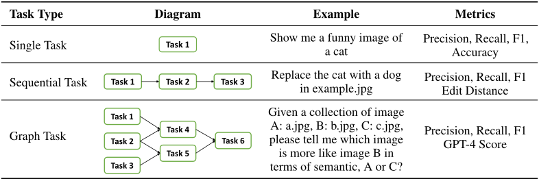
| Task Type | Diagram | Example | Metrics |
|---|---|---|---|
| Single Task | Task 1 | Show me a funny image of a cat | Precision, Recall, F1, Accuracy |
| Sequential Task Task | 1 Task 2 Task 3 | Replace the cat with a dog in example.jpg | Precision, Recall, F1 Edit Distance |
| Graph Task Task Task Task | 1 2 3 Task 4 Task 5 Task 6 | Given a collection of image A: a.jpg, B: b.jpg, C: c.jpg, please tell me which image is more like image B in terms of semantic, A or C? | Precision, Recall, F1 GPT-4 Score |
| Task Type | Diagram | Example | Metrics |
此外，对于其余没有任何资源依赖的任务，我们将直接并行执行这些任务，以进一步提高推理效率。这意味着，只要满足前置依赖关系，多个任务就可以同时执行。另外，我们提供了一个混合推理端点来部署这些模型，以实现加速和计算稳定性。更多细节请参阅附录 A.1.3。
3.4 Response Generation
在所有任务执行完成后，HuggingGPT 需要生成最终响应。如表 1 所示，HuggingGPT 在此阶段将前三个阶段（任务规划、模型选择和任务执行）的所有信息整合为一个简洁的摘要，其中包括规划的任务列表、为各任务选择的模型，以及模型的推理结果。
其中最重要的是推理结果，它们是 HuggingGPT 做出最终决策的关键依据。这些推理结果以结构化格式呈现，例如目标检测模型中带有检测概率的边界框、问答模型中的答案分布等。HuggingGPT 允许大语言模型（LLM）接收这些结构化的推理结果作为输入，并以友好的人类语言形式生成响应。此外，LLM 并非简单地聚合这些结果，而是生成能够主动回应用户请求的响应，从而提供带有置信水平的可靠决策。
4.1 Settings
在实验中，我们采用 GPT 模型的 gpt-3.5-turbo、text-davinci-003 和 gpt-4 变体作为主要的 LLM，它们可通过 OpenAI API 3 公开访问。为了使 LLM 的输出更加稳定，我们将解码温度设置为 0。此外，为了规范 LLM 的输出使其满足预期格式（例如 JSON 格式），我们针对格式约束字符（例如 ' { ' 和 ' } '）将 logit_bias 设置为 0.2。我们在表 1 中给出了为任务规划、模型选择和响应生成阶段设计的详细提示，其中 {{ variable }} 表示一个槽位，需要在送入 LLM 之前用相应的文本对其进行填充。
4.2 Qualitative Results
图 1 和图 2 展示了 HuggingGPT 的两个演示示例。在图 1 中，用户请求由两个子任务组成：描述图像和目标计数。作为对该请求的响应，HuggingGPT 规划了三个任务：图像分类、图像描述生成和目标检测，并分别启动了 google/vit [32]、nlpconnet/vit-gpt2-image-captioning [33] 和 facebook/detr-resnet-101 [34] 模型。最后，HuggingGPT 整合了模型推理的结果，并向用户生成了响应（描述图像并给出其中所含物体的数量）。
3 https://platform.openai.com/
7
图 2 展示了一个更详细的示例。在该案例中，用户的请求包含三个任务：检测示例图像中人物的姿态、基于该姿态和指定文本生成一张新图像，以及创建一段描述该图像的语音。HuggingGPT 将其解析为六个任务，包括姿态检测、以姿态为条件的文本生成图像、目标检测、图像分类、图像描述生成和文本转语音。我们观察到，HuggingGPT 能够正确地编排任务之间的执行顺序和资源依赖关系。例如，以姿态为条件的文本生成图像任务必须跟随姿态检测任务执行，并将其输出作为输入。此后，HuggingGPT 为每个任务选择了合适的模型，并将模型执行的结果综合成最终响应。更多演示示例请参阅附录 A.3。
4.3 Quantitative Evaluation
在 HuggingGPT 中，任务规划在整个工作流程中扮演着举足轻重的角色，因为它决定了后续流水线中将执行哪些任务。因此，我们认为任务规划的质量可以用来衡量大语言模型（LLM）作为 HuggingGPT 中控制器的能力。为此，我们开展了定量评估来衡量 LLM 的能力。在这里，我们简化了评估，仅考虑任务的
| LLM | Acc ↑ | Pre ↑ | Recall ↑ | F1 ↑ |
|---|---|---|---|---|
| Alpaca-7b | 6.48 | 35.6 | 6.64 | 4.88 |
| Vicuna-7b | 23.86 | 45.51 | 26.51 | 29.44 |
| GPT-3.5 | 52.62 | 62.12 | 52.62 | 54.45 |
| LLM | Acc ↑ | Pre ↑ | Recall ↑ | F1 ↑ |
类型，而不考虑其相关参数。为了更好地开展任务规划评估，我们将任务划分为三个不同的类别（见表 2），并为它们制定了不同的指标：
数据集 为了开展评估，我们邀请了一些标注者提交一些请求，我们收集这些数据作为评估数据集。我们使用 GPT-4 生成任务规划作为伪标签，这些伪标签涵盖单任务、序列任务和图任务。此外，我们邀请了一些专家标注者为一些复杂请求（46 个示例）标注任务规划，作为高质量的人工标注数据集。我们还计划提升该
| LLM | ED ↓ | Pre ↑ | Recall ↑ | F1 ↑ |
|---|---|---|---|---|
| Alpaca-7b | 0.83 | 22.27 | 23.35 | 22.8 |
| Vicuna-7b | 0.8 | 19.15 | 28.45 | 22.89 |
| GPT-3.5 | 0.54 | 61.09 | 45.15 | 51.92 |
| LLM | ED ↓ | Pre ↑ | Recall ↑ | F1 ↑ |
数据集的质量和数量，以进一步辅助评估 LLM 的规划能力，这仍是未来的工作。关于该数据集的更多细节见附录 A.2。利用该数据集，我们针对任务规划在多种 LLM 上开展了实验评估，包括 Alpaca-7b [37]、Vicuna-7b [36] 以及 GPT 模型。
| LLM | GPT-4 Score ↑ | Pre ↑ | Recall ↑ | F1 ↑ |
|---|---|---|---|---|
| Alpaca-7b | 13.14 | 16.18 | 28.33 | 20.59 |
| Vicuna-7b | 19.17 | 13.97 | 28.08 | 18.66 |
| GPT-3.5 | 50.48 | 54.9 | 49.23 | 51.91 |
| LLM | GPT-4 Score ↑ | Pre ↑ | Recall ↑ | F1 ↑ |
性能 表 3、表 4 和表 5 分别展示了 HuggingGPT 在 GPT-4 标注数据集三个类别上的规划能力。我们观察到，GPT-3.5 表现出更为突出的规划能力，在所有类型的用户请求上都优于开源 LLM Alpaca-7b 和 Vicuna-7b。具体而言，在更复杂的任务（如序列任务和图任务）中，GPT-3.5 相对于其他 LLM 展现出绝对优势。这些结果也表明，对任务规划的评估能够反映 LLM 作为控制器的能力。因此，我们认为开发能够提升 LLM 任务规划能力的技术非常重要，我们将其留作未来的研究方向。
8
| LLM. | Sequential Task.Acc ↑ | Sequential Task.ED ↓ | Graph Task.Acc ↑ | Graph Task.F1 ↑ |
|---|---|---|---|---|
| Alpaca-7b | 0 | 0.96 | 4.17 | 4.17 |
| Vicuna-7b | 7.45 | 0.89 | 10.12 | 7.84 |
| GPT-3.5 | 18.18 | 0.76 | 20.83 | 16.45 |
| GPT-4 | 41.36 | 0.61 | 58.33 | 49.28 |
| LLM. | Sequential Task.Acc ↑ | Sequential Task.ED ↓ | Graph Task.Acc ↑ | Graph Task.F1 ↑ |
此外，我们在高质量的人工标注数据集上开展了实验，以获得更精确的评估。表 6 报告了在人工标注数据集上的比较结果。这些结果与上述结论一致，突显出更强大的 LLM 在任务规划中展现出更好的性能。另外，我们比较了人工标注与 GPT-4 标注之间的结果。我们发现，尽管 GPT-4 优于其他 LLM，但与人工标注相比仍存在相当大的差距。这些观察结果进一步强调了提升 LLM 规划能力的重要性。
4.4 Ablation Study
| Demo Variety (# task types).Demo Variety (# task types) | LLM.LLM | Single Task.Acc ↑ | Single Task.F1 ↑ | Sequencial Task.ED (%) ↓ | Sequencial Task.F1 ↑ | Graph Task.F1 ↑ |
|---|---|---|---|---|---|---|
| 2 | GPT-3.5 | 43.31 | 48.29 | 71.27 | 32.15 | 43.42 |
| 2 | GPT-4 | 65.59 | 67.08 | 47.17 | 55.13 | 53.96 |
| 6 | GPT-3.5 | 51.31 | 51.81 | 60.81 | 43.19 | 58.51 |
| 6 | GPT-4 | 66.83 | 68.14 | 42.2 | 58.18 | 64.34 |
| 10 | GPT-3.5 | 52.83 | 53.7 | 56.52 | 47.03 | 64.24 |
| 10 | GPT-4 | 67.52 | 71.05 | 39.32 | 60.8 | 66.9 |
| Demo Variety (# task types).Demo Variety (# task types) | LLM.LLM | Single Task.Acc ↑ | Single Task.F1 ↑ | Sequencial Task.ED (%) ↓ | Sequencial Task.F1 ↑ | Graph Task.F1 ↑ |
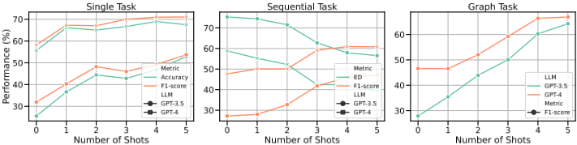
如前文默认设置中所述，我们采用少样本示例（few-shot demonstrations）来增强 LLM 理解用户意图和解析任务序列的能力。为了更好地研究示例对我们框架的影响，我们从两个角度开展了一系列消融实验：示例的数量和示例的多样性。表 7 报告了在不同示例多样性下的规划结果。我们观察到，增加示例之间的多样性能够适度提升 LLM 在执行规划方面的性能。此外，图 3 展示了使用不同数量示例进行任务规划的结果。我们可以发现，添加一些示例能够略微提升模型性能，但当示例数量超过 4 个时，这种提升将变得有限。未来，我们将继续探索更多能够在不同阶段提升 LLM 能力的要素。
9
| LLM.LLM | Task Planning.Passing Rate ↑ | Task Planning.Rationality ↑ | Model Selection.Passing Rate ↑ | Model Selection.Rationality ↑ | Response.Success Rate ↑ |
|---|---|---|---|---|---|
| Alpaca-13b | 51.04 | 32.17 | - | - | 6.92 |
| Vicuna-13b | 79.41 | 58.41 | - | - | 15.64 |
| GPT-3.5 | 91.22 | 78.47 | 93.89 | 84.29 | 63.08 |
| LLM.LLM | Task Planning.Passing Rate ↑ | Task Planning.Rationality ↑ | Model Selection.Passing Rate ↑ | Model Selection.Rationality ↑ | Response.Success Rate ↑ |
4.5 Human Evaluation
除了客观评估之外，我们在实验中还邀请了人类专家进行主观评估。我们收集了 130 个多样化的请求，用于评估 HuggingGPT 在各个阶段（包括任务规划、模型选择和最终响应生成）的性能。我们设计了三个评估指标，即通过率（passing rate）、合理性（rationality）和成功率（success rate）。各指标的定义见附录 A.1.6。结果报告于表 8。从表 8 中，我们可以观察到类似的结论：在从任务规划到响应生成的各个阶段，GPT-3.5 都能以巨大优势显著超越 Alpaca-13b 和 Vicuna-13b 等开源 LLM。这些结果表明，我们的客观评估与人类评估是一致的，并进一步证明了在自主智能体框架中需要一个强大的 LLM 作为控制器的必要性。
5 Limitations
HuggingGPT 为设计 AI 解决方案提出了一种新范式，但我们想强调的是，目前仍存在一些局限性或改进空间：1）HuggingGPT 中的任务规划严重依赖于大语言模型（LLM）的能力。因此，我们无法保证生成的规划始终可行且最优。为此，探索优化 LLM 的方法以增强其规划能力至关重要；2）效率是我们框架中的一个普遍挑战。要构建这样一个具备任务自动化的协作系统（即 HuggingGPT），严重依赖于一个强大的控制器（例如 ChatGPT）。然而，HuggingGPT 在整个工作流程中需要与 LLM 进行多次交互，因而使生成响应的时间成本不断增加；3）token 长度是使用 LLM 时的另一个常见问题，因为最大 token 长度总是有限的。尽管一些工作已将最大长度扩展到 32K，但如果我们想要连接大量模型，这仍然无法满足需求。因此，如何简洁而有效地总结模型描述也值得探索；4）不稳定性主要源于 LLM 通常难以控制。尽管 LLM 擅长生成，但在预测过程中仍可能无法遵循指令或给出不正确的答案，从而导致程序工作流程中出现异常。在设计系统时，应当考虑如何减少推理过程中的这些不确定性。
6 Conclusion
在本文中，我们提出了一个名为 HuggingGPT 的系统来解决 AI 任务，该系统以语言作为连接 LLM 与 AI 模型的接口。我们系统的原理是：LLM 可以被视为管理 AI 模型的控制器，并能够利用 Hugging Face 等机器学习（ML）社区中的模型来自动解决用户的各种请求。通过发挥 LLM 在理解与推理方面的优势，HuggingGPT 能够剖析用户的意图并将其分解为多个子任务。随后，基于专家模型描述，HuggingGPT 能够为每个任务分配最合适的模型，并整合来自不同模型的结果以生成最终回复。通过利用来自机器学习社区的大量 AI 模型的能力，HuggingGPT 在解决具有挑战性的 AI 任务方面展现出巨大潜力，从而为实现通用人工智能铺就了一条新的道路。
10
A.1 More details
在本节中，我们将进一步介绍 HuggingGPT 各阶段中一些设计的更多细节。
A.1.1 Template for Task Planning
为了对解析后的任务进行格式化，我们定义了模板 [{ "task" : task, "id" , task_id, "dep" : dependency_task_ids, "args" : { "text" : text, "image" : URL, "audio" : URL, "video" : URL}}]，其中包含四个槽位："task"、"id"、"dep" 和 "args"。表 9 给出了各槽位的定义。
| Name | Definitions |
|---|---|
| "task" | It represents the type of the parsed task. It covers different tasks in language, visual, video, audio, etc. The currently supported task list of HuggingGPT is shown in Table 13. |
| "id" | The unique identifier for task planning, which is used for references to dependent tasks and their generated resources. |
| "dep" | It defines the pre-requisite tasks required for execution. The task will be launched only when all the pre-requisite dependent tasks are finished. |
| "args" | It contains the list of required arguments for task execution. It contains three subfields populated with text, image, and audio resources according to the task type. They are resolved from either the user's request or the generated resources of the dependent tasks. The corresponding argument types for different task types are shown in Table 13. |
| Name | Definitions |
A.1.2 Model Descriptions
总体而言，Hugging Face Hub 托管着众多专家模型，这些模型通常由开发者提供详细的模型描述。这些描述涵盖模型的多个方面，例如其功能、架构、支持的语言和领域、许可证以及其他相关信息。这些全面的模型描述在辅助 HuggingGPT 进行决策方面发挥着至关重要的作用。通过评估用户的请求并将其与模型描述进行对比，HuggingGPT 能够有效地确定最适合给定任务的模型。
A.1.3 Hybrid Endpoint in System Deployment
理想的情况是，我们只使用云服务（例如 Hugging Face）上的推理端点。然而，在某些情况下，我们不得不部署本地推理端点，例如当某些模型的推理端点不存在、推理过程非常耗时，或者网络访问受限时。为了保持系统的稳定性和效率，HuggingGPT 允许我们在本地拉取并运行一些常用或耗时的模型。本地推理端点速度快，但覆盖的模型较少，而云服务（例如 Hugging Face）中的推理端点则恰恰相反。因此，本地端点比云端推理端点具有更高的优先级。只有当匹配到的模型未在本地部署时，HuggingGPT 才会在诸如 Hugging Face 这样的云端端点上运行该模型。总体而言，我们认为，如何为 HuggingGPT 或其他自主 Agent 设计和部署具有更好稳定性的系统，在未来将非常重要。
A.1.4 Task List
到目前为止，HuggingGPT 已支持 24 种 AI 任务，涵盖语言、视觉、语音等领域。表 13 展示了 HuggingGPT 所支持任务列表的详细信息。
A.1.5 GPT-4 Score
参照 Vicuna [36] 所采用的评估方法，我们采用 GPT-4 作为评估器来评估大语言模型（LLM）的规划能力。更具体地，我们将用户请求和 LLM 规划出的任务列表放入提示（prompt）中，然后让 GPT-4 判断该任务列表是否准确，并给出相应理由。为引导 GPT-4 做出正确判断，我们设计了一些任务准则：1）任务位于所支持的任务列表中（见表 13）；2）规划出的任务列表能够实现对用户请求的求解；3）任务之间的逻辑关系和顺序合理。在提示中，我们还补充了若干任务规划的正例和反例，为 GPT-4 提供参考。GPT-4 评分所用的提示如表 10 所示。我们还想进一步强调，尽管 GPT-4 评分已表现出较高的相关性，但它并不总是正确的。因此，我们也期望探索更可信的指标来评估 LLM 的规划能力。
14
作为评审者，你的任务是评估 AI 助手是否根据用户的请求对任务进行了恰当的规划。为此，请仔细审查用户的请求和助手的输出，然后使用 "Yes" 或 "No" 给出判定（"Yes" 表示规划准确，"No" 表示规划不准确）。此外，请按照以下结构给出你所做选择的理由：{ "choice" : "yes"/"no", "reason" : "Your reason for your choice"}。请遵循以下准则：1. 任务必须从以下选项中选择：{{ Available Task List }}。2. 请注意，任务之间存在逻辑关系和顺序。3. 只需关注任务规划的正确性，无需考虑任务参数。正例：{{ Positive Demos }} 反例：{{ Negative Demos }} 当前用户请求：{{ Input }} AI 助手的输出：{{ Output }} 你的判断：
A.1.6 Human Evaluation
为了更好地对齐人类偏好，我们邀请了三位人类专家来评估 HuggingGPT 的不同阶段。首先，我们从 Hugging Face 的任务列表中选取了 3-5 个任务，然后基于所选任务手动创建用户请求。我们将丢弃无法从所选任务生成新请求的样本。总体而言，我们使用不同的随机种子进行随机采样，最终收集了 130 个多样化的用户请求。基于生成的样本，我们评估了大语言模型（LLM）在不同阶段（例如任务规划、模型选择和响应生成）的性能。在此，我们设计了三个评估指标：
我们要求三位人类专家根据我们精心设计的指标对所提供的数据进行标注，然后计算平均值以获得最终分数。
A.2 Datasets for Task Planning Evaluation
如前所述，我们创建了两个数据集用于评估任务规划。在此我们提供关于这些数据集的更多细节。总体而言，我们收集了共 3,497 个多样化的用户请求。由于对这一数据集进行标注以获得每个请求的任务规划工作量很大，我们利用 GPT-4 的能力对其进行标注。最终，这些自动标注的请求可以分为三种类型：单任务（1,450 个请求）、序列任务（1,917 个请求）和图任务（130 个请求）。为了获得更可靠的评估，我们还构建了一个人工标注的数据集。我们邀请了一些专家标注者对部分复杂请求进行标注，共包含 46 个样本。目前，人工标注数据集包含 24 个序列任务和 22 个图任务。关于 GPT-4 标注数据集和人工标注数据集的详细统计信息如表 11 所示。
A.3.1 Case Study on Various Tasks
通过任务规划和模型选择，HuggingGPT 这一多模型协作系统使大语言模型（LLM）具备了更广泛的能力范围。在本节中，我们在多样化的多模态任务上对 HuggingGPT 进行了广泛评估，部分精选案例展示于图 4 和图 5 中。借助强大的 LLM 与众多专家模型的协作，HuggingGPT 能够有效处理跨越语言、图像、音频和视频等多种模态的任务。其能力涵盖多种任务形式，例如检测、生成、分类和问答。
15
| Datasets. | Number of Requests by Type.Single | Number of Requests by Type.Sequential | Number of Requests by Type.Graph | Request Length.Max | Request Length.Average | Number of Tasks.Max | Number of Tasks.Average |
|---|---|---|---|---|---|---|---|
| GPT-4-annotated | 1,450 | 1,917 | 130 | 52 | 13.26 | 13 | 1.82 |
| Human-annotated | - | 24 | 22 | 95 | 10.2 | 12 | 2 |
| Datasets. | Number of Requests by Type.Single | Number of Requests by Type.Sequential | Number of Requests by Type.Graph | Request Length.Max | Request Length.Average | Number of Tasks.Max | Number of Tasks.Average |
A.3.2 Case Study on Complex Tasks
A.3.3 Case Study on More Scenarios
我们在此展示更多案例，以说明 HuggingGPT 处理具有任务资源依赖、多模态、多种资源等特征的真实场景的能力。为了清晰地展示 HuggingGPT 的工作流程，我们还提供了任务规划和任务执行阶段的结果。
16
B More Discussion about Related Works
ChatGPT 及其后续变体 GPT-4 的出现，在大语言模型（LLM）和人工智能领域掀起了一场革命性的技术浪潮。尤其是在过去几周里，我们还见证了一些实验性但非常有趣的大语言模型应用，例如 AutoGPT 4、AgentGPT 5、BabyAGI 6 等。因此，我们也对这些工作进行了讨论，并从多个维度（包括场景、规划、工具等）提供了一些比较，如表 12 所示。
场景：目前，这些实验性智能体（例如 AutoGPT、AgentGPT 和 BabyAGI）主要用于解决日常请求。而 HuggingGPT 则专注于借助 Hugging Face 的能力解决人工智能领域的任务（例如视觉、语言、语音等）。因此，HuggingGPT 可以被视为一个更加专业的智能体。一般来说，用户可以根据自身需求（例如日常请求或专业领域）选择最合适的智能体，或者通过定义知识、规划策略和工具包来定制自己的智能体。
| Name | Scenarios | Planning | Tools |
|---|---|---|---|
| BabyAGI AgentGPT AutoGPT | Daily | Iterative Planning | - - Web Search, Code Executor, ... |
| HuggingGPT | AI area | Global Planning | Models in Hugging Face |
| Name | Scenarios | Planning | Tools |
规划：BabyAGI、AgentGPT 和 AutoGPT 都可以被视为自主智能体，它们为任务自动化提供了一些解决方案。对于这些智能体而言，它们都采用逐步思考的方式，通过使用大语言模型迭代地生成下一个任务。此外，AutoGPT 在每次任务生成时还采用了一个额外的反思（reflexion）模块，用于检查当前预测的任务是否合适。与这些应用相比，HuggingGPT 采用全局规划策略，在单次查询中获得完整的任务队列。很难判断哪一种方式更好，因为每种方式都有其不足之处，而且两者都严重依赖大语言模型的能力，尽管现有的大语言模型并非专门为任务规划而设计。例如，结合反思的迭代规划需要大量的 LLM 查询，如果某一步产生了错误的预测，整个工作流程可能会陷入无限循环。而对于全局规划，虽然它总能在单次查询中为每个用户请求产生一个解决方案，但仍无法保证每一步的正确性或整个规划的最优性。因此，迭代规划和全局规划各有优势，可以相互借鉴以缓解各自的不足。此外，值得注意的一点是，任务规划的难度也与任务范围呈线性相关。随着任务范围的扩大，控制器预测精确规划的难度也随之增加。因此，针对任务规划对控制器（即 LLM）进行优化，对于构建自主智能体将至关重要。
工具 在这些智能体（Agent）中，AutoGPT 是主要引入其他工具加以使用的一个。更具体地说，AutoGPT 主要使用一些常见工具（例如网页搜索、代码执行器），而 HuggingGPT 则利用机器学习（ML）社区中的专家模型（例如 Hugging Face）。因此，AutoGPT 的任务范围更广，但不适合解决更专业的问题，而 HuggingGPT 则更加专业化，专注于解决更复杂的 AI 任务。因此，大语言模型（LLM）所使用工具的范围将是任务深度与任务范围之间的权衡。此外，我们还注意到一些面向 LLM 应用的工业界产品（例如 ChatGPT 插件 7）以及面向 LLM 应用的开发者工具（例如 LangChain 8、HuggingFace Transformer Agent 9、Semantic Kernels 10）。我们相信，这些快速进展也将促进社区探索如何更好地将 LLM 与外部工具集成。
4 https://github.com/Significant-Gravitas/Auto-GPT
5 https://github.com/reworkd/AgentGPT
6 https://github.com/yoheinakajima/babyagi
17
总体而言，HuggingGPT 也可以被视为一个自主智能体。与这些主要使用 GPT 模型为用户请求生成解决方案的实验性智能体相比，HuggingGPT 系统性地提出了一个包含四个阶段的清晰流程：任务规划、模型选择、任务执行和响应生成。这样的流程能够有效提高解决用户请求的成功率。此外，HuggingGPT 还引入了全局规划策略来分解用户请求，从而实现任务自动化。而且，HuggingGPT 是一个协作系统，它充分利用来自 ML 社区的专家模型的力量来解决 AI 任务，并展示了使用外部工具的巨大潜力。与这些智能体相比，HuggingGPT 使我们能够在专业领域更有效地解决任务，并且可以轻松扩展到任何垂直领域。未来，我们将继续以更强大的能力增强 HuggingGPT，以开发出具有无限可能性的多功能自主智能体。
7 https://openai.com/blog/chatgpt-plugins
8 https://python.langchain.com/
9 https://huggingface.co/docs/transformers/transformers_agents
10 https://github.com/microsoft/semantic-kernel
18
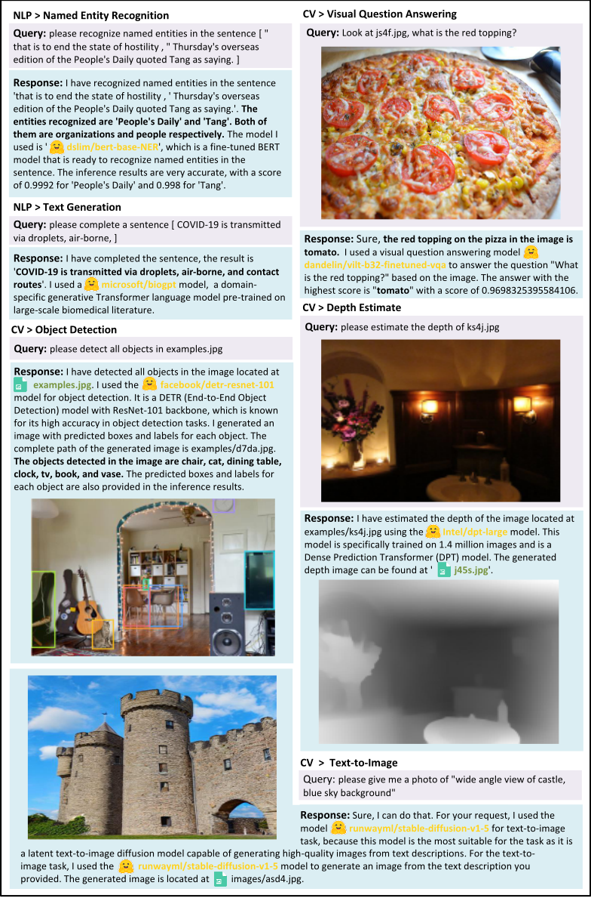
19
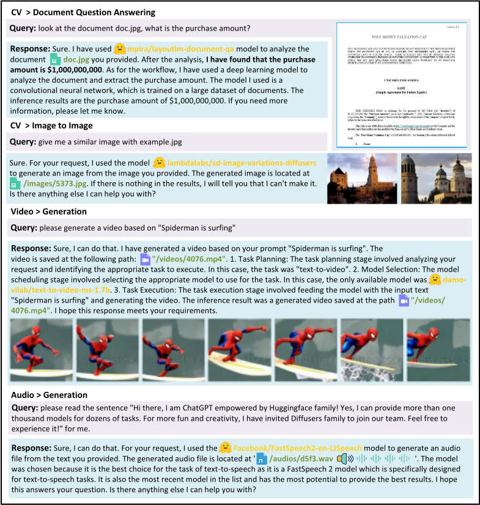
20
| Task | Args | Candidate Models | Descriptions |
|---|---|---|---|
| NLP Tasks | NLP Tasks | NLP Tasks | NLP Tasks |
| Text-CLS | text | [ cardiffnlp/twitter-roberta- base-sentiment , ...] | [' This is a RoBERTa-base model trained on 58M tweets ...', ...] |
| Token-CLS | text | [ dslim/bert-base-NER , ...] | [' bert-base-NER is a fine-tuned BERT model that is ready to ...', ...] |
| Text2text-Generation | text | [ google/flan-t5-xl , ...] | [' If you already know T5, FLAN-T5 is just better at everything ...', ...] |
| Summarization | text | [ bart-large-cnn , ...] | [ ' BART model pre-trained on English language, and fine-tuned ...', ...] |
| Translation | text | [ t5-base , ...] | [' With T5, we propose reframing all NLP tasks into a unified ...', ...] |
| Question-Answering | text | [ deepset/roberta-base- squad2 , ...] | [' This is the roberta-base model, fine-tuned using the SQuAD2.0 ...', ...] |
| Conversation | text | [ PygmalionAI/pygmalion- 6b , ...] | [' Pymalion 6B is a proof-of-concept dialogue model based on ...', ...] |
| Text-Generation | text | [ gpt2 , ...] | [' Pretrained model on English ...', ...] |
| Tabular-CLS | text | [ matth/flowformer , ...] | [' Automatic detection of blast cells in ALL data using transformers. ...', ...] |
| CV Tasks | CV Tasks | CV Tasks | CV Tasks |
| Image-to-Text | image | [ nlpconnect/vit-gpt2-image- captioning , ...] | [' This is an image captioning model trained by @ydshieh in flax ...', ...] |
| Text-to-Image | image | [ runwayml/stable-diffusion- v1-5 , ...] | [' Stable Diffusion is a latent text-to-image diffusion model ...', ...] |
| VQA | text + image | [ dandelin/vilt-b32- finetuned-vqa , ...] | [' Vision-and-Language Transformer (ViLT) model fine-tuned on ...', ...] |
| Segmentation | image | [ facebook/detr-resnet-50- panoptic , ...] | [' DEtection TRansformer (DETR) model trained end-to-end on ...', ...] |
| DQA | text + image | [ impira/layoutlm- document-qa , ...] | [' This is a fine-tuned version of the multi-modal LayoutLM model ...', ...] |
| Image-CLS | image | [ microsoft/resnet-50 , ...] | [' ResNet model pre-trained on ...', ...] |
| Image-to-image | image | [ radames/stable-diffusion- v1-5-img2img , ...] | [' Stable Diffusion is a latent text-to-image diffusion model ...', ...] |
| Object-Detection | image | [ facebook/detr-resnet-50 , ...] | [' DEtection TRansformer (DETR) model trained end-to-end on ...', ...] |
| ControlNet-SD | image | [ lllyasviel/sd-controlnet- canny , ...] | [' ControlNet is a neural network structure to control diffusion ...', ...] |
| Audio Tasks | Audio Tasks | Audio Tasks | Audio Tasks |
| Text-to-Speech | text | [ espnet/kan- bayashi_ljspeech_vits , ...] | [' his model was trained by kan-bayashi using ljspeech/tts1 recipe in ...', ...] |
| Audio-CLS | audio | [ TalTechNLP/voxlingua107- epaca-tdnn , ...] | [' This is a spoken language recognition model trained on the ...', ...] |
| ASR | audio | [ jonatasgrosman/wav2vec2- large-xlsr-53-english , ...] | [' Fine-tuned XLSR-53 large model for speech recognition in English ...', ...] |
| Audio-to-Audio | audio | [ speechbrain/metricgan- plus-voicebank , ...] | [' MetricGAN-trained model for Enhancement ...', ...] |
| Video Tasks | Video Tasks | Video Tasks | Video Tasks |
| Text-to-Video | text | [ damo-vilab/text-to-video- ms-1.7b , ...] | [' his model is based on a multi-stage text-to-video generation ...', ...] |
| Video-CLS | video | [ MCG-NJU/videomae- base , ...] | [' VideoMAE model pre-trained on Kinetics-400 for 1600 epochs ...', ...] |
| Task | Args | Candidate Models | Descriptions |
表 13：HuggingGPT 中使用的任务列表。第一列和第二列是对应任务的名称和参数。第三列和第四列给出了候选模型的一些示例及其模型描述。
21
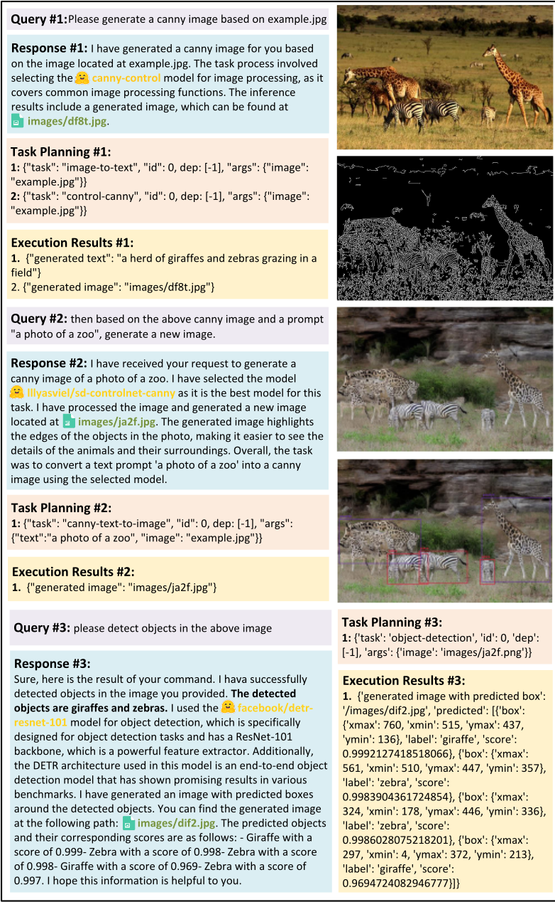
22
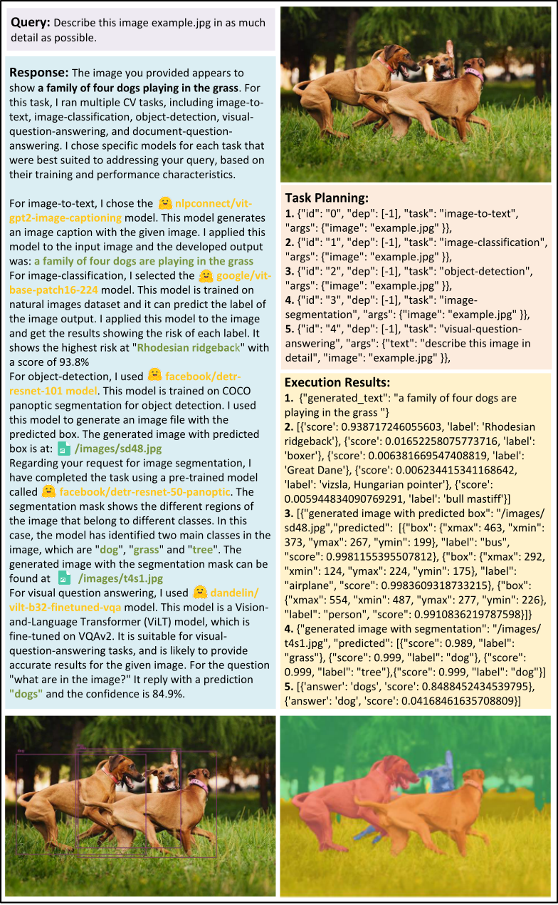
23
查询：你能告诉我图片 example1.jpg 中有多少个物体吗？
回复：图片中共有 8 个物体。在此任务中，我使用了模型 facebook/detr-resnet-101，该模型在一个名为 COCO 的流行目标检测数据集上训练，且下载量最高。它生成了一张带有预测边界框的图像，可通过路径 /images/79f2.jpg 获取。至于图像描述生成，我选择了模型 nlpconnect/vit-gpt2-image-captioning，该模型使用频率更高，且在此情况下效果更好。从图像生成的文本为“一架大型喷气式客机停在机场停机坪上。”
Execution Results:
Task Planning:
"image": "example2.jpg" }}
Execution Results:
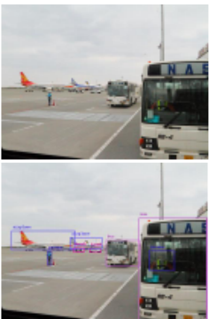
24
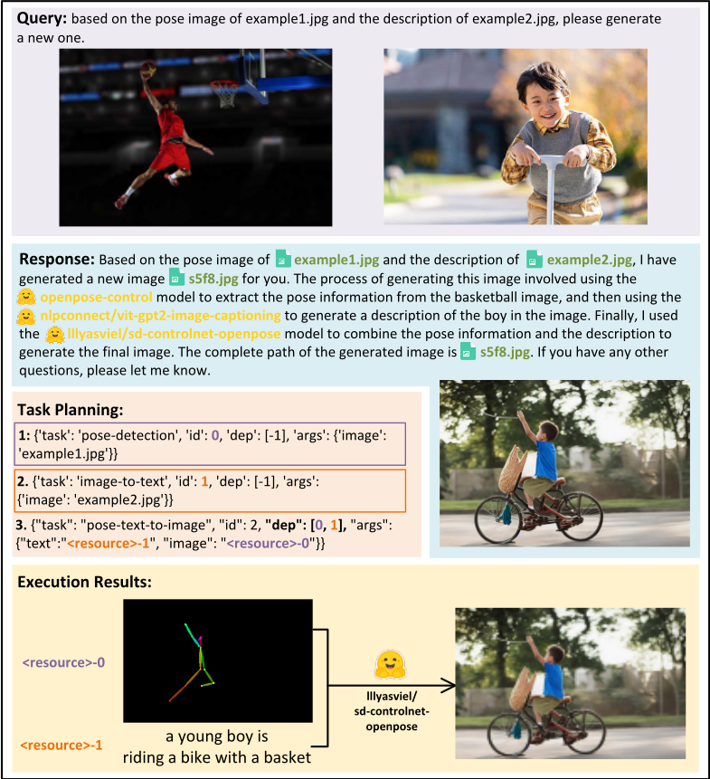
25
查询：生成一个标题为 "An astronaut is walking in space" 的视频并为其配音。
回答：好的。我已生成一个标题为 'An astronaut is walking in space' 的视频并为其配音。我使用的工作流程如下：首先，我使用文生视频（text-to-video）模型 ' damo-vilab/text-to-video-ms1.7b ' 从文本生成视频。推理结果是生成的视频 ' /videos/5696.mp4 '。其次，我使用文本转语音（text-to-speech）模型 ' facebook/tts_transformer-es-css10 ' 从文本生成音频。推理结果是生成的音频 ' /audios/3f9e.flac '。最后，我将视频和音频组合起来生成配音后的视频。希望这回答了您的问题。还有什么我可以帮您的吗？
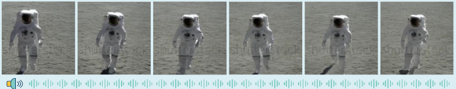
Task Planning:
1: {"task": "text-to-video", "id": 0, "dep": [-1], "args": {"text": "一名宇航员正在太空中行走" }} 2: {"task": "text-to-speech", "id": 1, "dep": [-1], "args": {"text": "一名宇航员正在太空中行走" }}
Execution Results:
查询：帮我读取图片 example.jpg。
INV0ICE NO: 18301/102/T0305
回复：好的。我已经为您读取了图片 example.jpg。推理结果为 'INVOICE NO : 18301/102/T0305'。此任务所使用的模型是 microsoft/trocr-base-printed，它最适合图像到文本（image-to-text）任务，因为它在专门为此任务设计的 SROIE 数据集上进行了微调。随后我将文本转换为音频，生成的音频为 /audios/da5s.wav，此任务所使用的模型是 facebook/fastspeech2-en-ljspeech，它是一个 FastSpeech 2 文本到语音（text-to-speech）模型，适用于文本到语音任务。还有什么我可以帮您的吗？
任务规划：1: {"task": "image-to-text", "id": 0, "dep": [-1], "args": {"image": "example.jpg"}} 2: {"task": "text-to-speech", "id": 1, "dep": [0], "args": {"text": "<resource-0>"} 执行结果：1. {"generated text": "INVOICE NO : 18301/102/T0305"} 2. {"generated audio": "/audios/da5s.wav"}
26
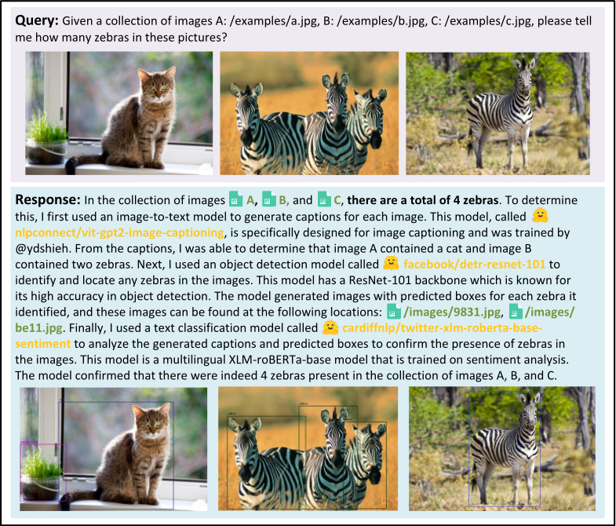
27